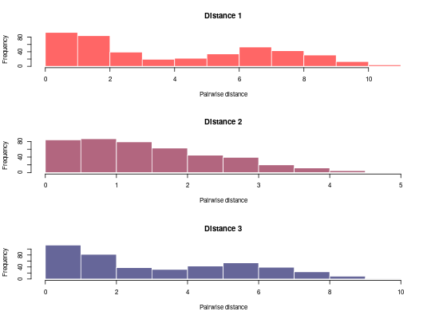

The function vimes is used to identify clusters of related cases based
on multiple data.
vimes(x, method = c("basic"), cutoff = NULL, log_dens = NULL, graph_opt = vimes_graph_opt(), ...)
vimes_data.vimes_graph_opt.hist.!!! This package is still under development. Do not use it without contacting the author. !!!
Different methods can be used for graph pruning:
cutoff; if
missing, they are chosen interactively by the user by examining the
distribution of distancesvimes_datavimes_prune## generate data set.seed(2) dat1 <- rnorm(30, c(0,1,6)) dat2 <- rnorm(30, c(0,0,1)) dat3 <- rnorm(30, c(8,1,2)) x <- lapply(list(dat1, dat2, dat3), dist) x <- vimes_data(x) plot(x)## analyse data res <- vimes(x, cutoff=c(2,4,2)) res#> $graph #> IGRAPH UN-- 30 104 -- #> + attr: layout_1 (g/n), layout_2 (g/n), layout_3 (g/n), layout (g/n), #> | color_1 (v/c), color_2 (v/c), color_3 (v/c), size_1 (v/n), size_2 #> | (v/n), size_3 (v/n), label.family_1 (v/c), label.family_2 (v/c), #> | label.family_3 (v/c), label.color_1 (v/c), label.color_2 (v/c), #> | label.color_3 (v/c), name (v/c), color (v/c), size (v/n), #> | label.family (v/c), label.color (v/c), weight_1 (e/n), weight_2 #> | (e/n), weight_3 (e/n), label.color_1 (e/c), label.color_2 (e/c), #> | label.color_3 (e/c), label.color (e/c) #> + edges (vertex names): #> [1] 27--30 25--28 24--30 24--27 23--29 22--28 22--25 21--30 21--27 20--29 #> + ... omitted several edges #> #> $clusters #> $clusters$membership #> 1 2 3 4 5 6 7 8 9 10 11 12 13 14 15 16 17 18 19 20 21 22 23 24 25 26 #> 1 2 3 1 2 3 1 2 3 1 2 3 1 2 3 1 2 3 1 2 3 1 2 3 1 2 #> 27 28 29 30 #> 3 1 2 3 #> #> $clusters$size #> [1] 10 10 10 #> #> $clusters$K #> [1] 3 #> #> $clusters$color #> 1 2 3 #> "#ccddff" "#79d2a6" "#ffb3b3" #> #> #> $cutoff #> [1] 2 4 2 #> #> $separate_graphs #> $separate_graphs[[1]] #> $separate_graphs[[1]]$graph #> IGRAPH UNW- 30 177 -- #> + attr: layout (g/n), name (v/c), color (v/c), size (v/n), label.family #> | (v/c), label.color (v/c), weight (e/n), label.color (e/c) #> + edges (vertex names): #> [1] 1--4 1--5 1--7 1--8 1--10 1--13 1--14 1--16 1--19 1--22 1--25 1--26 #> [13] 1--28 2--5 2--7 2--8 2--10 2--11 2--13 2--14 2--17 2--19 2--20 2--23 #> [25] 2--25 2--28 2--29 3--6 3--9 3--12 3--15 3--18 3--21 3--24 3--27 3--30 #> [37] 4--7 4--8 4--10 4--13 4--14 4--16 4--22 4--25 4--26 4--28 5--7 5--8 #> [49] 5--10 5--11 5--13 5--14 5--17 5--19 5--20 5--23 5--25 5--28 5--29 6--9 #> [61] 6--12 6--15 6--18 6--21 6--24 6--27 6--30 7--8 7--10 7--11 7--13 7--14 #> [73] 7--17 7--19 7--20 7--22 7--23 7--25 7--28 7--29 8--10 8--11 8--13 8--14 #> + ... omitted several edges #> #> $separate_graphs[[1]]$clusters #> $separate_graphs[[1]]$clusters$membership #> 1 2 3 4 5 6 7 8 9 10 11 12 13 14 15 16 17 18 19 20 21 22 23 24 25 26 #> 1 1 2 1 1 2 1 1 2 1 1 2 1 1 2 1 1 2 1 1 2 1 1 2 1 1 #> 27 28 29 30 #> 2 1 1 2 #> #> $separate_graphs[[1]]$clusters$size #> [1] 20 10 #> #> $separate_graphs[[1]]$clusters$K #> [1] 2 #> #> $separate_graphs[[1]]$clusters$color #> 1 2 #> "#ccddff" "#79d2a6" #> #> #> $separate_graphs[[1]]$cutoff #> [1] 2 #> #> #> $separate_graphs[[2]] #> $separate_graphs[[2]]$graph #> IGRAPH UNW- 30 429 -- #> + attr: layout (g/n), name (v/c), color (v/c), size (v/n), label.family #> | (v/c), label.color (v/c), weight (e/n), label.color (e/c) #> + edges (vertex names): #> [1] 1--2 1--3 1--4 1--5 1--6 1--7 1--8 1--9 1--10 1--11 1--12 1--13 #> [13] 1--14 1--15 1--16 1--17 1--18 1--19 1--20 1--21 1--22 1--23 1--24 1--25 #> [25] 1--26 1--27 1--28 1--29 1--30 2--3 2--4 2--5 2--6 2--7 2--8 2--9 #> [37] 2--10 2--11 2--12 2--13 2--14 2--15 2--16 2--17 2--18 2--19 2--20 2--21 #> [49] 2--22 2--23 2--24 2--25 2--26 2--27 2--28 2--29 2--30 3--4 3--5 3--6 #> [61] 3--7 3--8 3--9 3--10 3--11 3--12 3--13 3--14 3--15 3--16 3--17 3--18 #> [73] 3--19 3--20 3--21 3--22 3--23 3--24 3--25 3--27 3--28 3--29 3--30 4--5 #> + ... omitted several edges #> #> $separate_graphs[[2]]$clusters #> $separate_graphs[[2]]$clusters$membership #> 1 2 3 4 5 6 7 8 9 10 11 12 13 14 15 16 17 18 19 20 21 22 23 24 25 26 #> 1 1 1 1 1 1 1 1 1 1 1 1 1 1 1 1 1 1 1 1 1 1 1 1 1 1 #> 27 28 29 30 #> 1 1 1 1 #> #> $separate_graphs[[2]]$clusters$size #> [1] 30 #> #> $separate_graphs[[2]]$clusters$K #> [1] 1 #> #> $separate_graphs[[2]]$clusters$color #> 1 #> "#ccddff" #> #> #> $separate_graphs[[2]]$cutoff #> [1] 4 #> #> #> $separate_graphs[[3]] #> $separate_graphs[[3]]$graph #> IGRAPH UNW- 30 195 -- #> + attr: layout (g/n), name (v/c), color (v/c), size (v/n), label.family #> | (v/c), label.color (v/c), weight (e/n), label.color (e/c) #> + edges (vertex names): #> [1] 1--4 1--7 1--10 1--13 1--16 1--22 1--25 1--28 2--3 2--5 2--6 2--9 #> [13] 2--12 2--14 2--15 2--17 2--18 2--21 2--26 2--27 2--30 3--5 3--6 3--8 #> [25] 3--9 3--11 3--12 3--14 3--15 3--17 3--18 3--20 3--21 3--23 3--24 3--26 #> [37] 3--27 3--29 3--30 4--10 4--13 4--16 4--19 4--22 4--28 5--6 5--8 5--9 #> [49] 5--11 5--12 5--14 5--15 5--17 5--18 5--20 5--21 5--23 5--24 5--26 5--27 #> [61] 5--29 5--30 6--8 6--9 6--11 6--12 6--14 6--15 6--17 6--18 6--20 6--21 #> [73] 6--23 6--24 6--26 6--27 6--29 6--30 7--10 7--13 7--16 7--22 7--25 7--28 #> + ... omitted several edges #> #> $separate_graphs[[3]]$clusters #> $separate_graphs[[3]]$clusters$membership #> 1 2 3 4 5 6 7 8 9 10 11 12 13 14 15 16 17 18 19 20 21 22 23 24 25 26 #> 1 2 2 1 2 2 1 2 2 1 2 2 1 2 2 1 2 2 1 2 2 1 2 2 1 2 #> 27 28 29 30 #> 2 1 2 2 #> #> $separate_graphs[[3]]$clusters$size #> [1] 10 20 #> #> $separate_graphs[[3]]$clusters$K #> [1] 2 #> #> $separate_graphs[[3]]$clusters$color #> 1 2 #> "#ccddff" "#79d2a6" #> #> #> $separate_graphs[[3]]$cutoff #> [1] 2 #> #> #>plot(res$graph)